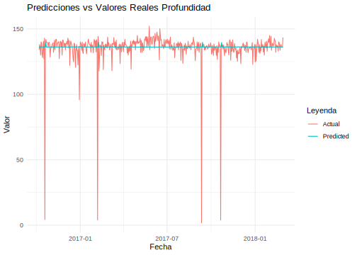
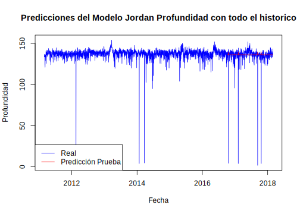

8.3 Modelo Jordan Profundidad
library(ggplot2)
library(RSNNS)
library(dplyr)
data = data_profundidad
train_size <- floor(0.80 * nrow(data))
train_data <- data[1:train_size, ]
test_data <- data[(train_size + 1):nrow(data), ]
max_val <- max(data$y)
min_val <- min(data$y)
normalize <- function(x) {
return ((x - min_val) / (max_val - min_val))
}
train_data$y <- normalize(train_data$y)
test_data$y <- normalize(test_data$y)
create_lagged_matrix <- function(data, lag) {
inputs <- data %>%
dplyr::mutate(lagged_y = dplyr::lag(y, lag)) %>%
na.omit()
inputs_matrix <- as.matrix(inputs$lagged_y)
outputs_matrix <- as.matrix(inputs$y)
return(list(inputs = inputs_matrix, outputs = outputs_matrix))
}
lag <- 2
train_matrices <- create_lagged_matrix(train_data, lag)
test_matrices <- create_lagged_matrix(test_data, lag)
jordan_model <- jordan(train_matrices$inputs, train_matrices$outputs, size = c(5), maxit = 500, learnFuncParams = c(0.1), initFunc = "JE_Weights")
predictions <- predict(jordan_model, test_matrices$inputs)
# Desnormalizar las predicciones
denormalize <- function(x) {
return (x * (max_val - min_val) + min_val)
}
predictions <- denormalize(predictions)
# Comparar las predicciones con los valores reales
results <- data.frame(
Date = test_data$ds[(lag + 1):nrow(test_data)],
Actual = denormalize(test_data$y[(lag + 1):nrow(test_data)]),
Predicted = predictions
)
head(results,10)## Date Actual Predicted
## 1 2016-10-07 134.0 136.1674
## 2 2016-10-08 138.0 136.2298
## 3 2016-10-09 136.0 136.2104
## 4 2016-10-10 130.0 136.1753
## 5 2016-10-11 140.0 136.1932
## 6 2016-10-12 139.3 136.2499
## 7 2016-10-13 130.9 136.1584
## 8 2016-10-14 128.0 136.1656
## 9 2016-10-15 134.6 136.2416
## 10 2016-10-16 140.5 136.2698ggplot(data = results, aes(x = Date)) +
geom_line(aes(y = Actual, color = "Actual")) +
geom_line(aes(y = Predicted, color = "Predicted")) +
labs(title = "Predicciones vs Valores Reales Profundidad",
x = "Fecha",
y = "Valor",
color = "Leyenda") +
theme_minimal()
test_data_new <- head(test_data, -2)
plot(data$ds, data$y, type = 'l', col = 'blue', main = 'Predicciones del Modelo Jordan Profundidad con todo el historico', xlab = 'Fecha', ylab = 'Profundidad')
lines(test_data_new$ds, predictions, col = 'red')
legend("bottomleft", legend = c("Real","Predicción Prueba"), col = c("blue", "red"), lty = 1)
Estas dos gráficas muestran predicciones de la profundidad de los sismos utilizando diferentes modelos. En la primera gráfica, se comparan los valores reales de la profundidad (línea roja) con las predicciones realizadas (línea azul claro) a lo largo del tiempo, indicando que las predicciones siguen de cerca los valores reales pero con cierta desviación. La segunda gráfica presenta las predicciones realizadas con el modelo Jordan (línea roja) contra los datos históricos (línea azul). Aquí, se observa que las predicciones del modelo Jordan tienden a estabilizarse en un rango más estrecho, lo cual puede indicar una mayor consistencia, pero también una posible subestimación de las fluctuaciones observadas en los datos reales.